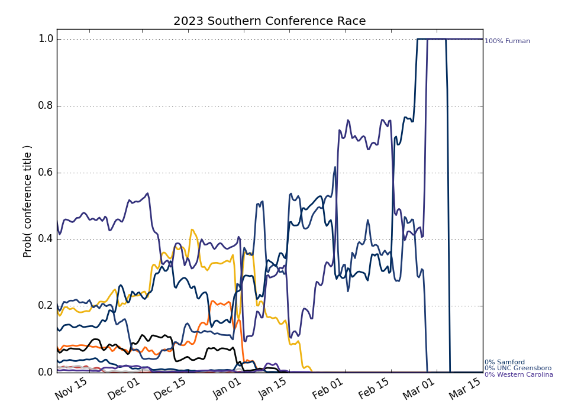
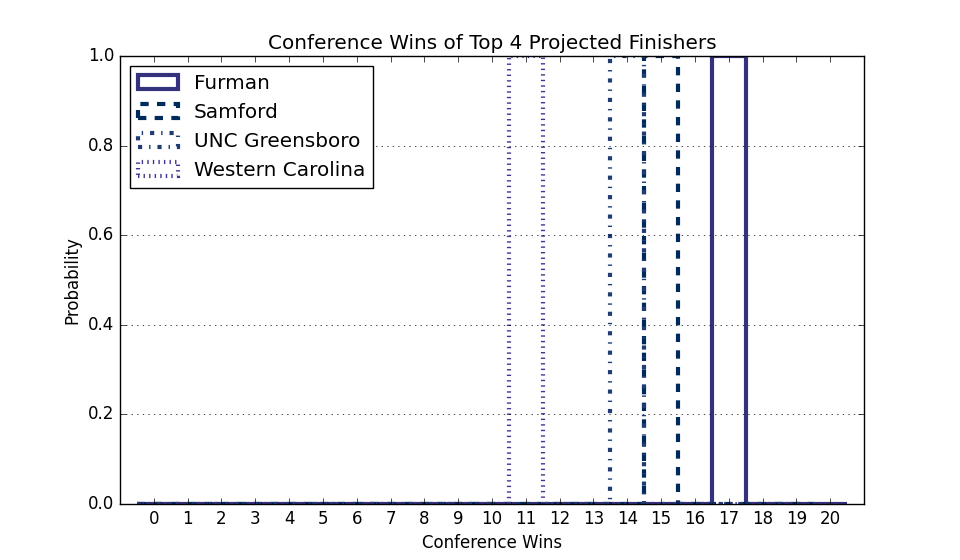

Southern
Updated with games through Monday, April 03
Conference Projections
Based on 10,000 simulations of the remaining season.
Tiebreaking was done using the
Big Ten tiebreaking procedures.
| Southern |
Current Record |
Projected Record |
Projected Finish (% odds, with tiebreakers) |
|
Team |
Conf. |
Overall |
Conf. |
Overall |
1st | 2nd | 3rd | 4th | 5th | 6th | 7th | 8th | 9th | 10th |
| 1. |
Furman (98) |
17 - 3 |
25 - 8 |
17.0 - 3.0 |
25.0 - 8.0 |
100.0 | | | | | | | | | |
| 2. |
Samford (140) |
15 - 4 |
18 - 10 |
15.0 - 4.0 |
18.0 - 10.0 |
| 100.0 | | | | | | | | |
| 3. |
UNC Greensboro (117) |
14 - 5 |
18 - 12 |
14.0 - 5.0 |
18.0 - 12.0 |
| | 100.0 | | | | | | | |
| 4. |
Western Carolina (234) |
11 - 9 |
15 - 16 |
11.0 - 9.0 |
15.0 - 16.0 |
| | | 100.0 | | | | | | |
| 5. |
Chattanooga (184) |
10 - 11 |
15 - 17 |
10.0 - 11.0 |
15.0 - 17.0 |
| | | | 100.0 | | | | | |
| 6. |
Wofford (245) |
9 - 11 |
14 - 16 |
9.0 - 11.0 |
14.0 - 16.0 |
| | | | | 100.0 | | | | |
| 7. |
East Tennessee St. (251) |
8 - 11 |
10 - 20 |
8.0 - 11.0 |
10.0 - 20.0 |
| | | | | | 100.0 | | | |
| 8. |
Mercer (219) |
7 - 13 |
12 - 19 |
7.0 - 13.0 |
12.0 - 19.0 |
| | | | | | | 100.0 | | |
| 9. |
The Citadel (335) |
5 - 14 |
9 - 22 |
5.0 - 14.0 |
9.0 - 22.0 |
| | | | | | | | 100.0 | |
| 10. |
VMI (352) |
2 - 17 |
4 - 25 |
2.0 - 17.0 |
4.0 - 25.0 |
| | | | | | | | | 100.0 |
Weekly Changes |
| 1. |
Furman (98) |
|
+0.0 | +0.0 | +0.0 | +0.0 | +0.0 | +0.0 | +0.0 | +0.0 | +0.0 | +0.0 |
| 2. |
Samford (140) |
|
+0.0 | +0.0 | +0.0 | +0.0 | +0.0 | +0.0 | +0.0 | +0.0 | +0.0 | +0.0 |
| 3. |
UNC Greensboro (117) |
|
+0.0 | +0.0 | +0.0 | +0.0 | +0.0 | +0.0 | +0.0 | +0.0 | +0.0 | +0.0 |
| 4. |
Western Carolina (234) |
|
+0.0 | +0.0 | +0.0 | +0.0 | +0.0 | +0.0 | +0.0 | +0.0 | +0.0 | +0.0 |
| 5. |
Chattanooga (184) |
|
+0.0 | +0.0 | +0.0 | +0.0 | +0.0 | +0.0 | +0.0 | +0.0 | +0.0 | +0.0 |
| 6. |
Wofford (245) |
|
+0.0 | +0.0 | +0.0 | +0.0 | +0.0 | +0.0 | +0.0 | +0.0 | +0.0 | +0.0 |
| 7. |
East Tennessee St. (251) |
|
+0.0 | +0.0 | +0.0 | +0.0 | +0.0 | +0.0 | +0.0 | +0.0 | +0.0 | +0.0 |
| 8. |
Mercer (219) |
|
+0.0 | +0.0 | +0.0 | +0.0 | +0.0 | +0.0 | +0.0 | +0.0 | +0.0 | +0.0 |
| 9. |
The Citadel (335) |
|
+0.0 | +0.0 | +0.0 | +0.0 | +0.0 | +0.0 | +0.0 | +0.0 | +0.0 | +0.0 |
| 10. |
VMI (352) |
|
+0.0 | +0.0 | +0.0 | +0.0 | +0.0 | +0.0 | +0.0 | +0.0 | +0.0 | +0.0 |
This table gives the probability of earning at least a share of a given place.
So there are no tiebreakers and there can be multiple first place teams, for example.


This Week's Games
| Date |
Away |
W Prob, Pred Score |
Home |